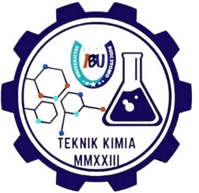
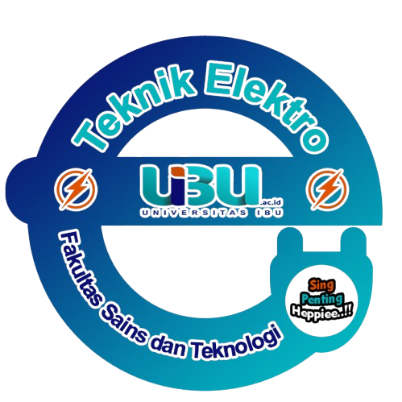

⌖
Ceritakan asalmu
Daerah asal, sekolah, dan latar pendidikanmu.
Ceritakan asal sekolah, sumber informasi, dan program studi yang menarik perhatianmu. Jawabanmu membantu FST UIBU menyusun informasi pendidikan yang lebih tepat sasaran.

KimiaTeliti • Temukan
Teknik ElektroHubungkan • InovasiKami ingin memahami bagaimana informasi tentang UIBU sampai kepadamu. Apakah dari guru, keluarga, teman, media sosial, atau sumber lainnya? Tidak ada jawaban benar atau salah. Isi sesuai pengalamanmu.
Daerah asal, sekolah, dan latar pendidikanmu.
Platform digital, rekomendasi orang terdekat, atau sosialisasi sekolah.
Teknik Mesin, Kimia, atau Teknik Elektro.
Potret kegiatan Fakultas Sains dan Teknologi. Foto dimuat langsung dari dokumentasi publik UIBU, tanpa menyimpan salinannya di repository microsite.
Ringkasan agregat hasil survei calon mahasiswa. Grafik akan diperbarui dari database terpusat setelah integrasi Google Sheets aktif.
SMA, SMK, MA, Pondok Pesantren, dan lainnya
Distribusi minat Teknik Mesin, Kimia, dan Teknik Elektro
Kabupaten / kota dengan jumlah responden terbanyak
Dari mana responden pertama kali mengenal UIBU
Instagram, TikTok, Facebook, YouTube, WhatsApp, X, dan lainnya
Latar belakang pendidikan sebelum masuk perguruan tinggi
Pengaruh keluarga, saudara, teman, dan rekomendasi
Minat pribadi, prospek kerja, beasiswa, biaya, fasilitas, dan lainnya
Dashboard hanya menampilkan data agregat. Nama, catatan pribadi, dan identitas responden tidak ditampilkan.
Isi beberapa pertanyaan berikut. Jawaban digunakan untuk evaluasi sosialisasi dan promosi pendidikan FST UIBU.